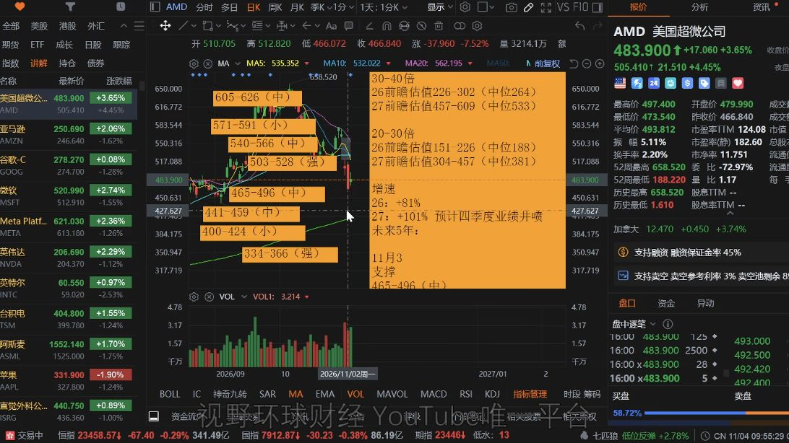
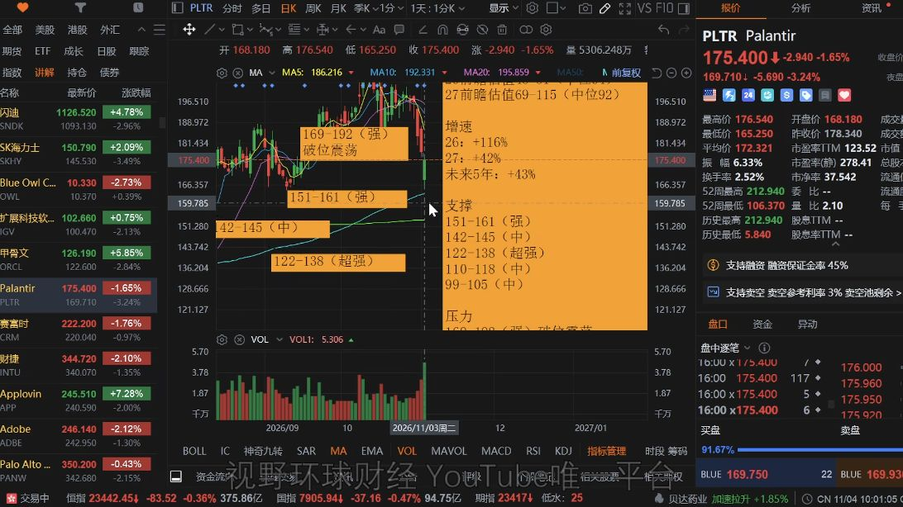
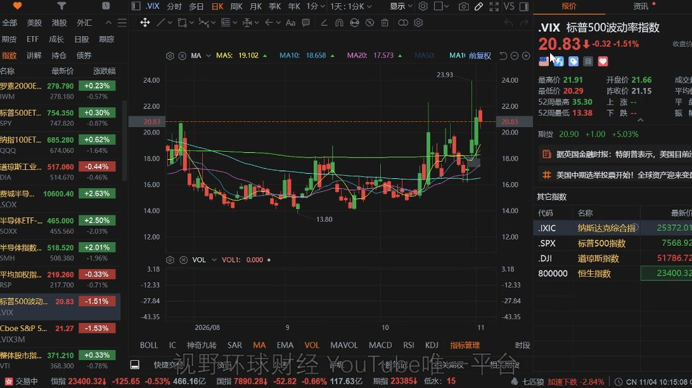

发布于 2026-11-04 · 北京时间AI 承压之下，重新审视增长的价格AMD 的强劲前瞻，为什么仍藏着现金流隐忧？PLTR 业绩继续增长，为什么市场仍不买账？从这两份财报出发，梳理融资、估值与选举预期交织下的美股机会与风险。视野环球财经33:54 音频约 13 分钟阅读节目日期 2026.11.03 · 美东AMDPLTR基本面估值技术面宏观政策市场情绪交易策略☆ 收藏本篇标为已读打印文章本期重点4 组 · 22 条AMD8PLTR4市场与 AI6VIX4AMD前瞻强劲，但现金流与当前估值限制了容错。8 条财报反应财报公布后盘后上涨约 3%—4%，一度达到约 7%。▶回听01:39—01:46对应正文 ↗增长驱动数据中心收入 85.5 亿美元、同比 +97%；四季度营收指引 170 亿美元、同比约 +65%，AI 业务成为增长支柱。▶回听02:29—03:42对应正文 ↗回款与现金流自由现金流从 15.6 亿降至 5.54 亿美元；库存和应收账款分别增至 114.6 亿、92.1 亿美元，要跟踪增长能否变成回款。▶回听04:53—06:05对应正文 ↗估值测算按 30—40 倍测算，2027 年前瞻区间约 457—609 美元，中位约 533 美元；500 美元附近已提前反映较多增长，距 609 美元上沿约两成。▶回听10:00—11:09对应正文 ↗压力与趋势盘后约 505 美元是此前支撑跌破后的反弹压力；未突破 528 美元，不确认重回上行趋势。▶回听12:40—13:04对应正文 ↗下方位置450 美元附近相对更合理，比 500 美元附近有更多容错；当时 200 日均线约 400 美元。▶回听13:04—13:34对应正文 ↗风险与时点回款受阻、客户融资困难或资本支出明显放缓，会增加估值压力；重点观察 2027 年 1 月中旬之后的财报季及资本支出指引。▶回听11:09—12:03对应正文 ↗横向比较AMD 相对 NVDA 仍不便宜；高增长来得更晚，又遇到资本支出增速可能见顶和产业链信用压力上升。▶回听13:34—14:09对应正文 ↗PLTR绝对增长仍快，合同增速放缓与价格透支使股价承压。4 条增速变化总合同价值同比增速由 49% 降至 6%；美国商业合同增速由 153% 降至 11%，且环比下降。管理层解释为合同期限缩短。▶回听15:18—16:07对应正文 ↗估值与表现按约 50 倍测算的 2027 年前瞻约 115 美元，低于当时 170—175 美元；价格提前透支增长，是好财报之后仍承压的重要原因。▶回听17:30—18:17对应正文 ↗上方压力跌破 169 美元后，169—192 美元成为较强压力区；短线反弹收复一部分，也不能取消上方压力。▶回听18:31—18:51对应正文 ↗下档与走势下方重点观察 151—161 美元、122—138 美元两档；能维持震荡横盘、避免大幅下跌，已是相对不错的结果。▶回听18:51—19:13对应正文 ↗市场与 AI选举风险压制 AI 情绪，继续关注融资、估值与趋势。6 条盘面表现道指下跌，其余三个主要指数上涨；盘中较前一天平稳、成交量收缩，市场等待选举结果。▶回听00:09—00:21对应正文 ↗劳动力数据9 月职位空缺 752.3 万，高于 710 万预期及修正后的 719 万；劳动力需求较 8 月更旺盛。▶回听00:54—01:30对应正文 ↗盘后承压纳指 100 期货与部分 AI 股快速下跌，市场重新计入选举风险；当时 Polymarket 的 99% 是博彩押注，尚非确认结果。▶回听20:12—21:45对应正文 ↗条件与影响若民主党控制两院，监督、听证、地方审批和融资审查可能更活跃，增加合规、运营及融资的不确定性。▶回听24:56—26:48对应正文 ↗成本传导AI 建设未必停止，但审批、建设延期会增加资金成本，推迟投产与收入兑现；关键在于项目进度如何传导到现金流和估值。▶回听28:28—29:10对应正文 ↗参与条件先等趋势稳定，再关注信贷质量好、资产负债表稳健，且市价没有透支一年以上前瞻估值的公司。▶回听30:08—30:23对应正文 ↗VIX用波动率档位判断情绪；当时有加大保险，尚未极度恐慌。4 条趋稳区间回到 18 以下，市场相对更平稳；在 16 附近运行更理想。▶回听32:47—33:04对应正文 ↗波动与风险处于 18 以上，仍预期较大波动；升至 22 以上，风险计价增强。▶回听33:04—33:15对应正文 ↗恐慌区间升至 25—30，可能对应更猛烈的抛售和恐慌阶段。▶回听33:15—33:21对应正文 ↗当时判断市场已经出现增加保险的行为，但尚未达到极度恐慌。▶回听33:25—33:36对应正文 ↗这期涉及哪些股票与内容？AMD主讲前瞻强劲，重点讨论库存、应收账款、现金流及价格位置。PLTR主讲营收高增长，合同增速放缓，讨论前瞻估值与压力区间。NVDA对比用于比较 AMD 的估值与增长阶段。背景提及：META、AMZN、MSFT、GOOGL、ORCL。市场指标：VIX。背景提及不代表对该股票展开分析。CHAPTER 01 · 回听 00:00市场在等待选举，职位空缺数据依然强劲美东时间 2026 年 11 月 3 日晚，道指下跌，另外三个主要指数上涨，盘中走势比前一天平稳，成交量也有所收缩。市场的注意力集中在中期选举结果，以及不同政治格局可能怎样影响 AI 投资。随着选举进程推进，博彩市场对民主党横扫国会两院的押注明显提高，AI 主题随之承压。经济数据方面，9 月职位空缺数量，从修正后的 719 万增加至 752.3 万，高于市场预计的 710 万，也达到 5 月以来的最高水平。离职率从 1.9% 升至 2.1%，职位空缺率从 4.3% 升至 4.5%。据此，我认为9 月劳动力需求较 8 月更旺盛，劳动者对找到其他工作的信心也有所改善。AMD 与 PLTR 的两份财报，都指向同一个问题：业务增长可以很好，但股价是否已经提前支付了过多的未来增长？CHAPTER 02 · 回听 01:39AMD：数据中心成为支柱，四季度指引强劲AMD 财报公布后，盘后上涨约 3% 至 4%，一度达到约 7%。从财报来看，AMD 当季营收为 133.8 亿美元，高于市场预期的 130.8 亿美元，同比增长 45%，并超过此前 127 亿至 133 亿美元指引区间的上限。调整后每股收益为 2.09 美元，高于预期的 1.97 美元，同比增长 74%；调整后毛利率为 56%，与预期一致。我认为，单看当季经营表现，这是一份不错的财报。业务结构的变化更值得注意。数据中心收入达到 85.5 亿美元，同比增长 97%、环比增长 27%，高于约 83 亿美元的市场预期，占总收入的比例升至 64%，一年前这一比例约为 47%。相比之下，客户端及游戏收入为 37.2 亿美元，同比下降 8%，其中游戏收入下降 40% 至 7.73 亿美元。其他业务收入为 11.1 亿美元，同比增长 29%，受到航空航天、国防、汽车与工业需求推动。这意味着，数据中心已经成为 AMD 收入与利润增长的核心。传统 PC 与游戏业务的疲弱，并没有掩盖 AI 相关业务扩张的速度，但也使公司表现更依赖数据中心这一条主线。四季度营收指引为 170 亿美元，环比增长约 27%，相较上年同期的 103 亿美元，同比增长约 65%。我进一步做了一个测算：前三季度数据中心收入约 210 亿美元，假如四季度该业务达到约 120 亿美元，全年就接近 330 亿美元；若 2027 年实现收入翻番的目标，则可能达到约 660 亿至 700 亿美元。其中四季度数据中心约 120 亿美元及后续推算，是我的测算，不能与公司整体营收指引混为一谈。前瞻中的小瑕疵在毛利率：四季度调整后毛利率指引约 55%，低于约 55.5% 的市场预期，也低于三季度的 56%。我认为，这一差距本身不算大；更需要继续追问的，是漂亮增长背后的现金流。CHAPTER 03 · 回听 04:53增长能否变成现金，取决于客户如何融资AMD 三季度资本支出下降至 6.48 亿美元，但经营现金流却从二季度的 23.7 亿美元降至约 12 亿美元，自由现金流从约 15.6 亿美元降至 5.54 亿美元。资本支出减少，现金流却没有随之改善，说明问题不能只从支出端解释。资产负债表给出了部分线索：库存从 84.7 亿美元升至 114.6 亿美元，单季增加约 35%；应收账款从 72.8 亿美元升至 92.1 亿美元，增加约 26%。此外，公司在 8 月发行约 47.5 亿美元债券，总债务增至约 70.8 亿美元。库存与应收账款合计增加近 50 亿美元，而当季经营现金流约为 12 亿美元。我不会直接把这些变化认定为坏账或经营失控。新产品交付初期通常存在产能爬坡，机架可能先建成、后交付，客户也会按自身节奏安排付款；如果四季度指引兑现，库存与回款压力可能得到缓解。真正需要区分的，是暂时的交付与付款错位，还是客户资金不足造成的持续性压力。高盛的一项分析显示，超大规模数据中心运营商三季度合计自由现金流约为负 310 亿美元。当客户自由现金流吃紧、供应商应收账款增长快于收入时，资金缺口由谁填补？在我看来，客户往往需要继续发债或进行股权融资。这又把问题带回 AI 产业链的信贷状况。如果部分运营商本就债务高、融资成本高，那么即使需求旺盛、合同充足，也未必能按照原计划快速建设、交付和付款。我认为当前的核心矛盾在于：需求并非唯一约束，资金来源及其可持续性同样决定业务能否落地。 合同金额增长，最终仍要经过建设、交付、回款，才能变成可持续现金流。CHAPTER 04 · 回听 09:35AMD 的估值与技术位置：500 美元附近如何理解高盛给予 AMD 买入评级及 12 个月 700 美元目标价，采用约 32 倍市盈率估值。我的测算更保守：以 30 至 40 倍估值计算，2027 年前瞻区间约为 457 至 609 美元，中位约 533 美元；另一个 20 至 30 倍估值区间约为 304 至 457 美元。这些是我采用特定估值假设计算出的区间，不是确定的未来价格。以当时约 500 美元的价格计算，即便走到较乐观区间的 609 美元上沿，空间也大约只有两成，而距离 2027 年末仍有一年多时间。据此，我认为股价已经提前反映了相当一部分未来增长，500 美元附近处于一个不够便宜、也难简单否定增长的位置。如果数据中心收入顺利翻倍、客户继续融资、资本支出仅温和放缓，公司仍可能上修业绩，市场也可能进一步交易 2028 年的增长。但这是一组需要兑现的条件。相反，若出现回款受阻、客户融资困难，或者资本支出增速放缓幅度大于预期，已经提前计入的增长就会增加估值压力。值得留意的是，2026 年四季度财报季、即 2027 年 1 月中旬之后，将是观察 2027 年资本支出节奏的重要时间窗口。技术面上，我将盘后约 505 美元视作需要小心的位置：此前高位支撑跌破后，可能转成反弹压力。在重新突破 528 美元之前，我不会把反弹视为上行趋势重新确认。 我认为，约 450 美元会比 500 美元附近提供更多容错；当时的 200 日均线约在 400 美元附近。这些位置对应当时的市场状态，均线和技术位置会随时间改变。横向比较，我认为 AMD 相对 NVDA 仍不便宜。AMD 基数较低，高增长阶段来得更晚，却恰好遇到资本支出增速可能见顶、产业链信用压力上升的环境。因而，不能只看到增速更快，还要把增长阶段与外部融资环境放在一起判断。放大查看 ↗AMD · 支撑、压力与估值区间原视频 13:27回听此处CHAPTER 05 · 回听 14:30PLTR：业绩亮眼，合同增速却在放缓PLTR 第三财季营收为 23.13 亿美元，同比增长 96%、环比增长 20%，首次突破 20 亿美元，超过分析师预计的约 21.8 亿美元。每股收益为 0.44 美元，高于预期的 0.41 美元，利润率约为 49%。美国业务收入为 19.37 亿美元，同比增长 119%，占总收入约 84%。美国商业收入达到 9.84 亿美元，同比增长 148%、环比增长 29%，首次超过美国政府收入；后者为 9.53 亿美元，同比增长 96%。因此，我对 PLTR 的疑虑并不在于有没有增长。它的绝对增速仍然很高，我更关心的是这种增长与当前价格之间的关系。市场担心的是增长变化的方向。总合同价值约为 29.18 亿美元，同比增长 6%，上一季度的同比增速为 49%；美国商业合同价值约为 14.63 亿美元，同比增长 11%，上一季度同比增速为 153%，且本季度环比下降。管理层解释称，合同期限缩短影响了当期合同价值，后续预计会延长与扩大。需要保留这项解释，同时也要看到：合同价值增速确实较此前明显放缓。四季度营收指引为 26.49 亿至 26.53 亿美元，高于市场预期；2026 年全年营收指引上调至 85.30 亿至 85.34 亿美元，同比增长约 91%；美国商业全年收入预计超过 35.59 亿美元，同比增长至少 143%。我认为，对一只市场长期按高增长预期定价的股票而言，前瞻很好本身还不够。此前股价持续上涨，建立在公司连续上调前瞻、且上调幅度不断超过预期的基础上。当价格已经较高、市场情绪又不如之前强劲时，合同增速放缓便更容易触发重新定价。CHAPTER 06 · 回听 16:33PLTR 的问题在于价格提前走了多远按我的测算，即便以约 50 倍的高增长估值看待 2027 年前瞻，对应价格也约为 115 美元，与当时约 170 至 175 美元的价格存在明显差距。因此，我认为价格提前透支的增长过多，是财报与前瞻表现不错、股价却仍承压的重要原因。这里的 115 美元是特定盈利预测和估值倍数下的测算结果，并非公司指引。技术面上，PLTR 当天开盘约在 168 美元，跌破 169 美元后，169 至 192 美元被视为较强压力区间。下方重点观察的两档区域为 151 至 161 美元，以及 122 至 138 美元。我认为，在估值压力尚未充分消化时，能够维持震荡横盘、避免大幅下跌，已经是相对不错的结果；短线有所收复，并不能自动取消上方压力。因此，我把个股筛选标准归纳为两点：其一，谨慎对待信用违约掉期（CDS）较高、债务重、资产负债表较差的数据中心公司，长期持有不应仅建立在押注其财务状况改善上；其二，当市价已经超过一年以后前瞻估值时，建立新仓需要更谨慎。这两点强调的是融资质量与估值容错，而不是仅凭某个热门主题或财报增速作判断。放大查看 ↗PLTR · 支撑、压力与前瞻估值原视频 19:03回听此处CHAPTER 07 · 回听 20:12选举预期如何传导至 AI 投资再回到中期选举。当时 Polymarket 对民主党横扫国会两院的押注，概率约为 99%，高于此前约六七成来回波动的水平。在我看来，当晚纳指 100 期货及部分 AI 个股快速下跌，主要是因为市场重新计入选举相关风险。这里的 99% 是当时博彩市场的押注，不代表已确认的选举结果，也不是确定性预测。在我的判断中，两党都希望维持美国的 AI 领先地位，AI 投资又是经济增长的重要支柱，因此不宜把政治变化直接等同于“停止发展 AI”。但支持 AI 发展，与支持数据中心无限制、无摩擦地扩张，并不是一回事。我认为，对数据中心建设的地方阻力已经具有跨党派特征。路透与益普索民调显示，约 56% 的总体选民支持限制数据中心建设，其中民主党选民约为 69%，共和党选民约为 43%；此外，有 22 个州在选举中将加强数据中心审查列为议题。这些数据反映出，地方民众对数据中心建设的担忧，可能转化成项目审批阻力。如果民主党控制两院，我认为，委员会调查、传票、听证和融资监督会更活跃，议题可能涉及数据中心扩张、AI 安全标准、独立评估、事故报告，以及私人信贷的透明度和风险。这些因素未必立即改变企业收入，却会增加合规、运营及融资的不确定性。银行、私募和基础设施投资者，也可能因此要求更高的风险补偿。不过，我也会考虑制衡与缓冲的可能性。总统否决权会提高重大限制性立法通过的难度，因此更直接的冲击可能来自监督、听证与地方审批，而不一定是迅速通过全面限制性法律。大量产能集中在少数州，州政府也要平衡选民诉求、就业和投资；实际执行未必完全等同于竞选期间的强硬表态。真正影响投资回报的，可能是建设没有停止，却变得更慢、更贵。 行政摩擦会产生真实成本：项目若依赖融资，审批与建设延期意味着资金成本继续累积，也可能推迟投产与收入兑现。因此，市场计入政治风险的路径，是项目进度、融资成本、现金流和最终估值之间的连锁反应，而不是简单判断某个政党是否“支持 AI”。CHAPTER 08 · 回听 29:29等待趋势稳定，避免用急于回本代替判断即便列举了政策、信用与估值风险，我仍然认为，不必因此对 AI 的长期发展过度悲观。产业要继续向前推进，但能否实现足够的货币化、能否让不同参与者都获得合理回报，需要在后续经营中观察，不能由需求叙事直接推导出所有公司的成功。面对反弹后盘后又走弱的市场，我的想法是，有意重新参与的人不必急于出手，而应先等待趋势稳定，再关注信贷质量较好、资产负债表稳健，且市价没有透支一年以上前瞻估值的公司。“可以考虑什么公司”与“现在是否适合建立仓位”是两层判断，不能因为前者成立，就跳过后者。止损后的心态也值得重视。一些投资者连续做波段、止损离场后，容易急着寻找能够快速回本的板块与股票。这种急迫会促使人逆势行动，也容易损害后续执行。我认为，逆风时保持防守、等待趋势回来，本身就是一种选择；等待并不必然意味着失去机会。因此，我更看重参与市场的节奏：先管理资金与情绪，再观察趋势和企业质量。我不会把一时的下跌视为产业终结，也不会因为公司增长快，就忽略已经提前反映增长的价格和融资风险。CHAPTER 09 · 回听 32:41用 VIX 观察情绪，但保留时点与条件我还会用波动率指数 VIX，辅助观察市场是否趋于平稳。我的经验区间是：回到 18 以下，市场相对更平稳；若能在 16 附近运行，则更理想。处于 18 以上时，我认为市场仍在预期较大的波动。若 VIX 升至 22 以上，我会将其理解为风险计价增强；若升至 25 至 30，则可能对应更猛烈的抛售与恐慌阶段。这些区间是我的观察框架，不是保证行情转折的机械信号。截至当晚，我的判断是，市场已经出现增加保险的行为，但尚未达到极度恐慌。结合前面两份财报与政策风险的分析，需要关注三个层面：增长是否兑现为现金、价格为增长支付了多少，以及趋势与融资环境是否支持继续承担风险。放大查看 ↗VIX · 波动率与市场情绪原视频 33:06回听此处SOURCE MATERIAL完整转录与回听原视频：美股 横扫概率极高，AI承压！AMD前瞻大好，暗藏隐忧！PLTR增速放缓高不可攀！机器原稿可能含同音字与数字单位错误，保留用于对照。播放00:0033:541×1.25×1.5×2×静音展开完整转录下载 TXT ↗下载 SRT ↗查找转录内容00:00大家好,欢迎回到视野环球财经,我是Ryno。00:04近来是美东时间,26年11月3号,周二晚上的8点35分。00:09今天市场是倒置独跌,三个上涨,盘中的走势是比昨天要平稳的多,成交量也有所萎缩,市场在等待大选的结果出炉。00:21那么在今天我准备节目的过程中,中期选举的结果虽然没有完全出炉,但是更加清晰。00:29现在的博彩市场呢,已经是压住民主党横扫的概率极高,所以呢,所有的AI投资主题,大家看到呢,是大幅承压。00:41咱们稍后呢,聊一下对AI投资影响的话题啊。00:44在讲这个之前呢,咱们看一个数据,还有两个财报。00:50好,我们首先看一下经济数据。00:54那么今天的9月份的职位空缺的报告呢,是非常的强劲啊。00:59这个数值呢,是从修正后的719万,增加到了752.3万,高于之前预测的710万,而且是达到5月份以来的最高水平。01:10那么离职率呢,是从1.9%升到了2.1%,表明劳动者对找到其他工作更有信心。01:19与此同时呢,职位空缺率从4.3%升到了4.5%,表明9月份的劳动率需求和8月份相比也更加的旺盛。01:30好,这个呢,就是今天的经济数据。01:33接下来呢,咱们讲两个财报啊,AMD和PLTR。01:39今天的AMD财报呢,旁后啊,是涨了三四个点啊,多的时候曾经达到过七个点左右。01:46好,我们看一下AMD的这份财报总体的走势啊,然后再给大家讲一下目前的价格状况啊,到底是高供低估,到底现在的价格算不算是价值投资。02:02好,我们首先看一下它的财报细节。02:06营收呢,是133.8亿,高于预期的130.8亿,同比增长45%,高于之前127到133亿的区间的上限。02:17调整后的每股收益呢,是2.09,高于预期的1.97,同比增长74%,那么调整后的毛利率56%,这个是和预期一致。02:29数据中心业务呢,是创下了85.5亿美元的历史新高,同比增长97%,环比增长27%,这个是远超市场预期的83亿。02:42客户端级游戏业务是37.2亿,同比下降8%,其中游戏业务的收入暴跌40%到7.73亿。02:52所以呢,这一块跟英特尔那边反映出来的情况是一样的。02:59其他呢,是11.1亿,同比增长29%,受到航空、航天国防、汽车和工业的推动。03:07好,那么目前呢,整个的数据中心业务呀,已经成为了AMD的大腿,占到了它的收入的64%,高于一年前的47%。03:18像传统的PC和游戏业务啊,目前是肉眼可见的速度在萎缩啊,但那个不重要啊,因为现在它的主要的利润率和净利润的来源就是从数据中心上。03:29好,我们看一下它的前瞻。03:34四季度的预计营收呢,是170亿,环比增长27%,较去年同期的103亿,同比增长65%。03:42好,这个的提出呢,我们就可以去测算出来大概它在四季度的数据中心的收入,以及之前不是提过一个2027年数据中心收入翻倍的目标吗?03:53我们来算一下啊。03:56这个呢,让苏思峰之前提出的2027年数据中心收入翻番的目标呢,有了更清确的这个数字的质疑。04:05市场分析认为呢,二六年的前九个月,数据中心的收入是210亿,那么加上预估的四季度的营收的170亿啊,其中估略算出来,数据中心大概是有120亿左右啊,所以2026年全年差不多应该是在330亿。04:222027年翻番就意味着明年的收入到12月份的这个财年会达到660到700亿左右,非常不错啊,非常非常的好啊,这个前瞻没毛病。04:37唯一有一点点瑕疵的是,调整后的毛利率是55,那么低于55.5的普遍预期,也低于三季度的56啊,这个是四季度的一个前瞻,低了一点点0.5个百分点啊,这个呢,问题不算太大。04:53但是呢,这里边有一个疑问啊,就是我们看它的资本支出,包括它的现金流的状况啊,如果你去细看会发现有一些问题。05:06三季度的资本支出降到了6.48亿,按照道理来讲,老花钱了,那它的现金流状况应该更好,对吧?05:15但实际上它的现金流状况却进一步恶化,静音现金流呢,从二季度的23.7亿降到了12亿,自由现金流从15.6亿暴跌到了5.54亿,钱去哪了呢?05:29对吧,总不能被老鼠给偷走了嘛?05:32好,那你仔细去看它的资产负债表,发现,就是在这些东西上啊,库存在一个季度内猛增了35%,从84.7亿增加到了114.6亿。05:48应收账款增长了26%,从72.8亿增加到了92.1亿。05:57还有呢,八月份发行了47.5亿的债券,总债务翻了一倍多,达到了70.8亿。06:05这个就是为什么自由现金流,你现在整体上资出变少了啊,为什么现在钱还变少了,对吧,这不合理嘛。06:14那你看这个就知道了,库存,应收账款,包括还有这个债务的水平,增加了这个利息支出。06:21那么我们换句话来讲,AMD呢,在一个季度内,创造了50亿美元的库存和应收账款啊,增加。06:30它的运营现金流呢,只有12亿。06:33那当然你可以这么说啊,就是按照数据中心的一般的这个产能爬坡模式嘛,它的新产品,因为这个季度才刚刚开始一个完整的交付季度,对吧。06:44那可能先有这种产能爬坡,比方说,先把机架建完了,还没有发货,对不对。06:51那么超大规模数据中心的运营商呢,它本来就会根据自身情况来安排付款,稍微拖延拖延也很有可能性,对吧。07:00所以呢,这种说法呢,完全认可啊,完全认可。07:03因为你看它四季度的业绩指引,表明这个库存会得到最终结局。07:09因为四季度的前瞻如果算出来的话,大概数据中心能跑到120亿嘛,对吧,那这个钱就能收回来很多。07:17但是,啊,这个里边,我今天看到高盛的一则分析啊,我觉得还是挺有道理的。07:22值得注意的是什么呢?07:25它的客户是谁?07:28根据高盛的数据显示,超大规模数据中心运营商三季度的自由现金流合计是负310亿。07:36就是它的客户啊,理论上把它们都算上来,客户是这个自由现金流是负的。07:42而在2025年的三季度,自由现金流还有差不多正600亿。07:47当你的客户现金流告急,而你的应收账款增长速度又超过了收入增长的速度,你环比增长一个26对16%嘛,那么谁来填补资金缺口就变得异常重要。08:02括号里是我补充的,还得是债务或者股权融资解决。08:07相当于呢,那市场上购买它产品的这些数据中心,要么就发债,要么就发股。08:14那这个对于市场来讲,其实我们知道现在市场最大的问题是什么?就是信贷问题吧。08:20就是很多的这个数据,这个数据中心呢,由于本身的这个信贷啊,高的这个资产负债表,现在呢整个的状况比较差,那么融资成本极高。08:31所以这里面就会存在一个,他们还要不要快马加鞭的问题,它是一个变化啊,是一个很大的变数。08:39所以账款上,合同上有,但到不到的了账。08:44这是我们后面一定要时刻关心的啊,因为这是影响到整个的数据中心,整个的AI业务发展的非常关键的。08:52好,那么简单,我们要总结一下就是,我这里写的很清楚啊,经常会有朋友来问这个问题。08:58现在的数据中心需求不是问题,无论你看Meta,亚马逊,你看这个微软,看谷歌,你甚至看甲骨文,对吧?09:08甚至你看Covid,你可以看需求根本就不是问题。09:12那什么是问题呢?09:14那就是你现在好的东西还没建起来呢?09:16没建起来,后面需求在排队,你没有产品卖给别人。09:20你要搞到钱,把这些产品建出来,弄出来,卖给别人,你才能收到钱啊,那光有合同没用吧。09:27所以资金来源,可持续性,是个很大的问题。09:32所以这里面就缺失了这么一环啊。09:35好,那目前呢,整个的MD的状况啊,我再给大家看一下它的价格吧。09:41首先我说一下高盛的价格啊,高盛给MD的买入评级是12个月目标价700美元,他们基于32倍的市盈率算的啊,但实际上我算出来没有那么高,给大家看看我对于MD的钱单估值的这个评估。10:00我们还是基于两个系统啊,首先呢,我以30到40倍,高盛是以32倍的12个月啊,我以30到40倍给大家做一个评估。10:11呃,会发现呢,27年的钱瞻上限在609,那么意味着现在我们就以500块钱来算,27年12月还有整整一年零一个季度的时间,它有20%就顶到了上限。10:27那其实之前跑了658已经高了,对吧,这个前面658已经很高了,好,那么如果你按低倍算呢,低倍算那只有457,当然你按个低倍按照这个增速来匹配的话,你肯定不合理嘛,10:40这个增速非常的快,对吧,明年如果它真的能实现数据中心的收入翻番,那它以低倍去匹配,那肯定是不合理的。10:48所以现在的核心就在于,它这个500块钱的价格真的是不上不下,你如果满打满算,按照27年去算,它已经跑了27年的一半了,就这个价格。11:00至少跑了,提前跑了6个月,还有6个月的空间,还有潜在的20%,那么如果中间出了任何一点点的瑕疵,11:09嘴巴中,应收账款那边,有人付不了账,对吧,我们只是假设啊,如果出现这种情况,因为你不知道资本支出的减少,11:20资本支出的增速放缓,我们说增速放缓这个事情,在27年很值得注意,因为今年的整个我们之前给大家看过一个表格嘛,11:30增速见顶了,增速要逐渐的放缓资本支出,只不过放缓的幅度市场分歧非常的大,11:38有人认为呢,只放缓一点,有人认为呢,会砍一半,所以这个结果在哪里,最晚最晚就是在26年的四季度的财报,11:50也就是在明年自然利的一月份中旬以后,在财报发布的时候,我们就能看到了,11:56那是一个极高的风险位,风险点位啊,极高的风险时间点,极高的风险时间点啊,12:03再次强调,好,那么这个是MD目前的一个价格,那这个价格呢,12:08就看你怎么去看待了,你要是信心很足,你认为没问题,12:12它甚至后面还能够继续,四季度之后呢,大家资本支出放缓的速度没那么快,12:18继续快马加鞭,市场继续能搞到钱,继续往前推进,12:21它甚至还有业绩继续提升的可能性,那继续往后面炒二八年,12:25你要是抱着这种想法呢,那你就要冒一点高位的风险,12:28从我个人来讲,我认为现在的价格,说实话,12:32在这个价格上啊,再加上匹配着这个技术面,12:37我觉得呢,这个位置,特别是盘后这个价格,12:40小心啊,盘后这个价格,在505块钱,12:44正好是之前刚刚跌穿的,在上个周五刚刚跌穿的这个地方,12:49这是之前维持在高位的最近的强制称,12:53跌穿之后已经变为压力,现在的盘后这个当反弹来看待,12:58没有过528之前,不能够重新确认上行趋势啊,13:02要注意任何的反弹被卖掉,13:04因为它往下走,腾出空间来,13:07其实相对对于长线资金来讲会更加安全,13:10你通过这套估计系统,对吧,13:11你会判断一下,它如果能回到像什么,13:14450左右,那你450左右,那你肯定要比现在的情况要安全的多,13:20还有一个大概10%左右的一个容易空间吧,13:24450左右差不多,13:25200日均是在400块,13:27450这个地方呢,相对就合理的多,13:29对不对,你至少按照低倍算的话,13:32刚刚顶住嘛,也没高嘛,13:34但是呢,仍旧是横向对比和英伟达来对比,13:39它的价格肯定是高的,13:40横向来对比,13:41因为英伟达的增速虽然没有AMD这么快,13:44因为英伟达的基数更高嘛,13:47它高增速早就过去了,13:49AMD呢,是因为基数更低,13:51所以它的高增长会比英伟达晚两年,13:54那么现在正好就是AMD高增长的时候,13:56但又刚好碰到了资本支出增速见顶,14:00还有信贷现在这边出问题的时候,14:03所以AMD现在的情况就是有一点点和那个英伟达相比呢,14:09AMD有一点点时间上吃点亏啊,14:12如果这个放在两年前,14:13AMD的价格早就起飞了,14:14它早就,14:15它如果是两年前是这个增速,14:17它早就已经不知道跑到多少去了,14:19可能跑到800都有可能性啊,14:22好,14:22这个是AMD啊,14:23大家自行去考量一下啊,14:24因为这个价格有点不上不下的啊,14:26500块钱左右,14:28呃,14:28然后我来讲一下,14:30还有一个大家问的比较多的,14:32就是关于PLTR,14:34昨天的财报我没讲啊,14:35因为讲别的东西去了,14:37今天给大家还是把它给过一下,14:44好,14:44我们看一下,14:45它是第三财季的财报,14:48营收是23.13亿,14:50同比增长96%,14:51环比是20%,14:53首次突破20亿啊,14:55远超分析师预期的21.8亿,14:58那么美股收益呢,14:59是0.44,15:00然后超过预期的0.41,15:02利润呢,15:03是49%,15:04那么美国英文呢,15:06是19.37亿,15:07同比增长119%,15:08占到总营收的84%,15:11那么美国的商业收入呢,15:12是9.84亿,15:13同比增长148%,15:15环比29%,15:16首次超过美国政府收入,15:18是9.53亿,15:20同比增长96%,15:21那么合同价值,15:24这个总比呢,15:26是增长6%,15:27约29.18亿啊,15:28上一季度是49%,15:30另外呢,15:31美国的商业合同的价值,15:33同比增长11%,15:34约14.63亿,15:35那么上个季度是正153%,15:38且环比下降,15:40这个呢,15:40是最近几年增速比较低的增速之一,15:44管理层的解释呢,15:45是说,15:45因为合同期限更短,15:47预计后续会延长和扩大,15:50我标签红色的部分,15:51就指的是什么意思呢,15:53指的是增速放缓的部分,15:56增速放缓的部分,15:57不是说不增长啊,15:58是放缓,15:59因为PLTR是一个高成长性,16:02高增长预期的股票,16:04这就是为什么它的财报发布之后,16:07其实市场的反应普遍不好,16:08因为期望很高,16:13好,16:13我们看一下前瞻,16:16四季度的营收是26.49到26.53亿,16:19高于市场预期,16:212026全年指引是上调到了85.3到85.34,16:25同比增长91%,16:27美国商业收入年度预计是35.59%,16:32同比增长至少143%,16:35前瞻给的也非常的好,16:38但是为什么股价表现的比较的差,16:43咱们以前的时候啊,16:45多次在讲PLTR,16:47特别是在最早的时候上涨的过程中,16:50还记得吗,16:51那这一轮啊,16:52一直在涨不涨了好几年吗,16:54我们一直在涨,16:54我们说,16:55它呢,16:55是一个高成长性的股票,16:57市场主要是看它就是不断的提升,17:00它已经连续几十个季度提升前瞻,17:02而且超出预期,17:03就是在前瞻的提升部分都远超预期,17:07所以股价一直都在涨,17:09但是涨的时候呢,17:10那个价格当时已经非常高了,17:12对不对,17:12已经是高估了很多,17:14所以呢,17:15当随着市场整体这个牛市情绪没那么猛的时候呢,17:19它也跟着就往下掉,17:21最终呢,17:22这个地方也是掉到了相对比较合理的位置上,17:25价格回到了这个价值区间嘛,17:27然后就被买起来,17:29好,17:30那现在它又是什么情况呢,17:32我们看一下,17:33175,17:36170块,17:3727年前瞻基于50倍的高增长去看,17:41115,17:43高了吗,17:44很明显高了,17:45对不对,17:46而且被高了很多,17:47还不是高了一点半点,17:48又回到了之前那个高价位,17:51这就是为什么它在这么好的前瞻给出来之后,17:54仍旧无法维持的原因,17:57增速放缓,17:59增速放缓,18:01这个市场的高成长性,18:03就要打一个问号在上面,18:06好,18:06目前的增速仍旧是绝对增速非常的快,18:09同理增速超级快,18:10仍旧是100多的40多的40多,18:13非常快,18:14但是无奈价格跑得太超前,18:17那么比较好的是什么呢,18:19就是这一次尽管下跌,18:21但是由于下方已经盘了比较久,18:23也形成了比较好的技术面,18:25所以有一些资金也放住没走,18:28那这种情况提醒大家一下,18:31对于它的看法,18:32我的看法很简单,18:34它目前由于跌破了169,18:36今天实际上开盘的时候就跌破了,18:38开盘是开在168块,18:40那么已经跌破,18:41169到192目前是强压力,18:45已经形成了强压力,18:46这个反弹哪怕今天收回了不少,18:48但仍旧是强压力,18:51这种情况下方151到161,18:53一直到122到138,18:55这两档,18:56中间的中等你可以不看,18:59它能够维持住这个震荡横盘,19:02不要去大幅下跌,19:04已经是不错的结果,19:06这是我对于它目前的看法,19:07因为这一次的前弹增速上调的不够多,19:11确实高估太多了,19:13但还记得我之前在周五的节目里19:15给大家讲过的和这一次最近要注意的事情吗,19:20什么东西不能做啊,19:22第一个就是CDS较高的收集中心,19:26对吧,19:26资产负债表比较难看的,19:29债务水平极高的,19:31违约风险极高的,19:33那么不管什么价格,19:34你最好不要去碰,19:35特别是想做长线的朋友,19:37你那个是拿长线去再赌它,19:40能够资产负债表转好,19:42但你有没有这个赌的必要,19:44对吧,19:44你从你的盈亏比你自己算一下啊,19:46第二个呢,19:47就是前瞻估值超过一年的,19:51市价超过前瞻估值一年以上的,19:54你要想在这个地方去建仓,19:56那你慎重,19:57这是我给大家几个非常重要的看法,20:00对于个股来讲,20:02这是POTR,20:03那么我的看法讲完了啊,20:05能够维持住震荡已经很不错,20:07不要大幅下跌已经很好很好了,20:10好,20:11最后呢,20:12我想跟踪一下关于中级选举的情况,20:16因为现在到了关键的节点上,20:19首先给大家看一眼期货吧,20:23大家看一下纳指啊,20:27纳指100的期货啊,20:29大幅下挫啊,20:31突然间碰就掉下来了,20:33为什么,20:34好,20:34我给大家看看目前中级选举,20:36到目前为止的市场的一个压注情况,20:42大家看到这是Polymarket上面的博彩市场的压注啊,20:47民主党横扫两院,20:49那么压注是几率是99%,20:52基本上其他的选项都没有,20:55都几乎没有啊,20:56什么两院分制啊都没有,20:58民主党横扫都没有啊,20:59其他的都没有,21:01民主党横扫99%,21:02那么昨天的时候是多少呢,21:04选举前的时候,21:05其实大概是六七十来回徘徊啊,21:07六七十来回徘徊,21:09并没有说一定怎么样怎么样啊,21:12因为那个是提前投票,21:13大家呢其实很多东西看不到,21:15那目前为止啊,21:16截止到现在呢,21:17美东时间晚上的大概,21:19我现在现在这个事情,21:20大概是美东时间的九点钟吧,21:22现在大概看到了这个结果啊,21:24这个呢,21:26当现在有一部分结果已经差不多七七八八了以后,21:30市场已经给出了,21:32那应该有的反应,21:34就是出现了一波恐慌式的抛售,21:39很多的个股,21:41我们看盘后,21:42大家可能还想,21:43发生什么事了,21:44这是外星人入侵地球了吗,21:46不是啊,21:47他也没炸书记中心,21:48对吧,21:48就是因为这个中期选举的问题,21:51目前有这么一些恐慌,21:53好,21:54但恐慌归恐慌啊,21:55我们要客观的去评价这个事情,21:58之前的节目呢,21:59我已经谈过,22:00我对于这次中期选举,22:02如何影响AI投资的这个观点,22:05讲的比较简单,22:06因为时间有限啊,22:08那么为什么说民主党横扫两院会对AI的投资呢,22:13会增加它的难度,22:15今天呢,22:16我带着数据给大家讲一讲,22:17包括一些政策,22:18你就知道了,22:19因为我这里呢,22:20不涉及到任何的什么政治倾向性啊,22:22我只讲对于投资的影响,22:24再次强调,22:25这个投资,22:27我们是来市场,22:28股市是来挣钱的,22:30我们要看政策或者趋势,22:32政治也好,22:33对于整个的股市的影响如何,22:36然后呢,22:37去帮助咱们辅助的做一些投资决策,22:40这是我们要看的,22:41对吧,22:41至于你支持什么政策,22:43那是你的政治话题啊,22:44大家可以去这个政论频道去参与讨论啊,22:46咱们这里,22:47我不探讨它政治的这个,22:50政治的这个,22:51这个政策的合理性,22:53我只探讨它对于咱们股市,22:55投资这个AI板块的合理性与否啊,22:58好,22:59那我这里呢,23:00给大家看一下目前的一个状况,23:02首先我们要明确一点,23:06就是美国的两党对于整个AI发展是一个什么态度,23:13两党的共识,23:14双方都支持美国AI领先地位,23:18任何政党都不会反对AI,23:21说咔,23:22我给你一刀,23:23AI不许干了,23:25对吧,23:25我给你掀翻了,23:27不可能出现这种情况啊,23:29这个是不可能出现的,23:31原因就在于,23:32现在AI投资是美国GDP经济增长的重要的大腿,23:38以如果砍了这个,23:39相当于它就自断大腿,23:41自断双臂,23:43任何政党都负不起这个政治责任和经济责任,23:47这是第一点,23:47这是第一点,23:48第二点,23:50事实上呢,23:52目前确实又出现了跨党派反对收集中心的过度扩张,23:57这是显而易见的,23:58大家生活在各州,24:00都知道对吧,24:01那很多抗议啊,24:02围起来,24:03对吧,24:03路风起来,24:04堵起来,24:05然后呢,24:05那你说当地的这个政府,24:08他怎么办,24:09对吧,24:10没办法呀,24:11好,24:11那么怎么一个跨党派里边,24:13有没有一些强弱呢,24:17民主党选民支持限制建设的比例明显更高,24:22根据路透呢和EPSO的民调都显示,24:25差不多56%的总体的选民是支持限制收集中心建设的,24:30其中民主党大概69%,24:33共和党大概43%,24:35很多地方已经出现了阻力,24:39我们昨天讲过,24:41在22个州在选举中,24:43都已经提出了会加强数据中心审查,24:47把它作为一个竞选的主题之一,24:49这是很明确的事情,24:50这是跨党派的,24:51不分哪个政党,24:53好,24:54那我们接着再往下看,24:56如果民主党横扫两院会出现什么样的一个结果呢?25:01那么从法律层面啊,25:04他们会获得委员会的调查权,25:07传票权,25:08听证会的主导权,25:10而且他们公开承诺要加强对硅谷,25:14AI公司和相关融资的监督,25:17包括,25:18针对数据中心快速扩张的审查,25:21AI安全标准,25:22独立评估,25:23事故报告等,25:25私人信贷等融资渠道的透明度与风险,25:28部分民主党人已经警告AI泡沫风险,25:31类似2008年,25:32怕这个信贷爆炸了,25:34最后大家一起完蛋,25:36那肯定要加强审查的,25:37对吧,25:37这是他的竞选纲理,25:39好,25:41这个就会增加政治的不确定性,25:43推高整个AI的合规和运营成本,25:46那你说,25:47作为AI投资的人啊,25:50包括那些出资的银行,25:52还有那些私募,25:54这些基础设施的投资者,25:56他们会不会去计价这个风险,25:58如果是你,25:59你会不会计价这个风险,25:59你手里有很多钱,26:01你想去投资一个数据中心的一个股权,26:04或者要借钱给他,26:05你会不会计价这个风险,26:07大家可以自己想一想,26:09那么现在的数据中心建设已经拖延,26:12本身已经构成了投资风险,26:14我们已经看到了信用评级不考的数据中心,26:17现在融资很困难,26:18已经出现了,26:20那么现在的情况,26:21一旦出现了很少的状况,26:22那么大家预计,26:24那可能这种信贷紧张的情况会进一步持续啊,26:28那是不是完全就没办法了呢,26:30有没有可能有一些其他的平衡呢,26:35还是有可能平衡的啊,26:38第一就是总统的否决权,26:41因为这个川普的人在任啊,26:43对吧,26:44总统还是在任啊,26:45所以通过立法程序来说,26:47重大的限制性的立法很难直接一口通过,26:50比方说他要通过一个什么限制收集中心的建设的什么一个法案,26:55那他过不了啊,26:56他总统否决权对吧,26:57那总统否决权以后又打回两院,26:59那要通过绝大多数的投票,27:01推翻总统的否决的否决嘛,27:04那他这个又这个立法过程就很困难,27:06所以真正的冲击来自于什么呢,27:09比方说监督啊,27:10听证啊,27:11地方阻力啊,27:12真正要实现立法,27:14至少在未来的两年想要去修订现有的数据中心的立法,27:18非常的困难啊,27:19基本上是不太可能的,27:21好吧,27:21这个就是目前现在我们看到的啊,27:25第一个可以平衡的,27:27但是肯定各种样的事情会暴露出来嘛,27:29就是啊,27:29监督谁了,27:30调查谁了,27:31又要去怎么样了,27:32会拖延这个数据中心的建设的过程,27:36还有一个就是州级很关键,27:39由于大量数据中心产能集中在少数州,27:42就是德州啊,27:44选举结束之后呢,27:46由于我们说选举的时候吧,27:47竞选纲领,27:48你肯定要喊得响一点,27:50压力会减轻选举完了以后,27:52但是呢,27:53你又不能说经济你不发展吧,27:55对吧,27:56你总要发展经济吧,27:57你要去平衡民众的这个抱怨,28:00还有经济发展两条路都得要平衡吧,28:02所以AI发展呢,28:04又必须要进行下去,28:05你不可能完全直接把所有的数据中心全部砍掉,28:09那投资全部都跑了,28:10跑到别的州去了,28:12对吧,28:12你不可能是这样吧,28:13你还是会审批过一些吧,28:15所以没有办法完全停止,28:18后续的审批未必比现在竞选纲领中更加严格,28:21这选举是选举嘛,28:23选举是选举嘛,28:24对吧,28:24所以这是目前我们能看到的,28:27但是呢,28:28凡是产生了行政成本的摩擦这件事情,28:31在企业经营中,28:33如果你经营企业和政府打交道,28:35你就会发现呢,28:36这种东西,28:37它就是企业的真实的成本,28:39因为企业的钱不是说每天账上都趴着大量的现金,28:43很多的钱呢,28:44是通过其他的融资的那个途径来的,28:49所有的钱都有成本,28:50即便是我的现金,28:51那我放在这里被拖延,28:53那我放在别的地方有收益,28:54那我还是损失,28:55对不对,28:56所以从这种程度上来讲,28:58那肯定行政成本的增加,29:01那就增加了企业的这个摩擦啊,29:05这个都一并增加,29:07这不是什么好事情啊,29:08肯定不算是特别好的事情,29:10但是呢,29:11是不是真的那么悲观呢,29:12就回到我刚才说的,29:13两党对于目前AI的支持上,29:16这是必须要干的,29:18就是这个事情他要干,29:19他必须得往下走,29:21因为你不走呢,29:22走下去成不成功,29:24就是能不能够极大的推动经济,29:27能不能实现我们说的AI货币化,29:29最后的所有人都成功上岸,29:31这个呢,29:31往后边走边看,29:32但你不走下去,29:34那你现在就是自己先把手脚先卡再说,29:37对吧,29:37那就是必败嘛,29:39好,29:39所以呢,29:40目前的状况呢,29:41总体上大家还是那句话啊,29:42不需要那么的悲观,29:44拨动拨动吧,29:44动一动吧,29:45是不是,29:46只剩这个行情都比较的恶心人了,29:48今天好不容易又反弹了一点,29:51然后呢,29:51现在是接着盘后啊,29:54又下去了,29:55下去了以后呢,29:56那明天结果呢,29:57又是一个低开,29:58又一高走,29:59大家又发现,30:00搞什么呢,30:01这是在,30:01是吧,30:01所以现在呢,30:03那你之前要动的都已经动过了嘛,30:05那你要没动的,30:06那你现在肯定就是没动嘛,30:08对吧,30:08我们自己在讲,30:09你要想买的,30:09不着急,30:10你等上一个趋势稳定之后啊,30:12趋势稳定之后,30:13很多东西都可以买,30:14不是不能买啊,30:14有些东西都是可以买的,30:17好吧,30:17我们讲过要买那些近代质量高的,30:19不要超过前长固执一年的,30:21没有问题啊,30:22这个是问题不大的,30:23好吧,30:25好,30:25那这个呢,30:26就是对咱们今天啊,30:28市场的一些内容的更新,30:30结果呢,30:30今天这个做着做着呢,30:31因为看到中期选举的这个东西,30:33就拿出来多给大家加了一段啊,30:35不然的话,30:36今天时间以后还可以稍早一些,30:38好,30:39不管怎么样呢,30:39把一些最新的信息传递给大家,30:41希望对大家有所帮助吧,30:44好,30:45那如果呢,30:45你觉得我的节目确实能帮到你,30:47还是感谢大家啊,30:48这个多多帮忙点赞,30:49昨天呢,30:50咱们说了这个,30:51呃,30:51这个行情在整个的九月份不好啊,30:54十月份不好,30:55大家就不用去赞助咖啡了啊,30:57结果大关,30:57还是有很多朋友,30:59感谢感谢啊,31:00很多朋友都是赞助咖啡啊,31:02非常感谢,31:03那没事啊,31:04大家这个多多点赞是一样的啊,31:05这个等行情好的时候,31:07咱们到时候再去热闹呗,31:09图个热闹的事情,31:10对吧,31:11一个刷刷屏啊,31:12热闹热闹,31:13图个喜性的,31:14这已经很喜性了,31:15都红了,31:16哈哈,31:17不要,31:17不用再喜性了啊,31:19大家这个好好的把自己的这个,31:20钱袋子看好啊,31:22因为现在确实是,31:24股市最近不好啊,31:26那个通胀也不好,31:28这个感觉呢,31:29都不好啊,31:30不好那时候呢,31:31就要防守吧,31:32防守的话,31:33就是心态平稳,31:35也别着急,31:36特别是我知道最近有很多朋友,31:37他可能是打了止损出来的,31:39然后比较着急,31:40呃,31:41然后呢,31:41就特别想着急,31:42就说能不能买什么板块,31:44买什么股票,31:45能快速的回本,31:46不要这么想啊,31:47不要这么想啊,31:48不要跟趋势做对,31:49有的时候趋势是这样,31:50趋势当逆风的时候,31:52呃,31:52你不做什么决定,31:54你等在那里,31:55能够趋势回来的时候,31:56他回来的也快,31:57你不要是逆风而上,31:58在特别是连续的,32:00很多朋友做波段止损之后,32:02就信心备受打击嘛,32:03然后呢,32:04后面就老想我要快,32:06我要快,32:09就结束了,32:10停一停,32:11连续逆风呢,32:12代表最近的这个投资风向不对,32:14对吧,32:15那就让自己的心态稳定一下再说,32:17那不要着急这个去做,32:20这个这个市场又不关门嘛,32:22是不是,32:23好吧,32:24那我们就其他不说了啊,32:25这个看看明天盘中的情况怎么样,32:28低开不要紧啊,32:29反正都破位了,32:30对吧,32:31低不低开就那回事,32:32好,32:33那我们今天到这儿啊,32:34再希望后面的行情能够在选举完了之后,32:37能够稍微的逐渐稳定一些,32:39稳定一些,32:41关于风险,32:41我提示一句啊,32:43大家看一下那个Wix啊,32:45大家可以追一下Wix,32:47就是你什么时候看到这个Wix回到18以下的时候,32:51代表市场呢,32:52逐渐已经趋于平稳了,32:53好吧,32:53作为一个市场是否平稳的一个指标,32:56在18以下,32:57至少要回到18以下,32:58较好的呢,32:59是在16附近,33:00去跑来跑去,33:01跑来跑去就比较不错,33:0218以下就相对平稳的多了,33:04你像在18以上,33:06那就代表市场还是预期有相对比较高的一些波动,33:10那回头你要是看到Wix跑到22以上了,33:13那代表着市场的风险极价在增强,33:15如果跑到25到30了,33:17那么市场应该那个时候是处于一个猛烈砸盘恐慌的时候,33:21大家可以对照的Wix自己稍微看一看,33:24知道市场现在的状况,33:25还是相对来讲,33:27有保险现在市场,33:28就是有一些加大保险的行为,33:32但是没有到极度恐慌的时候,33:34还没到啊,33:36好,33:36这个就咱们今天节目的全部内容,33:38如果你觉得我的节目对你所帮助,33:40还是希望大家看完之后,33:41能够多多帮忙,33:42点点赞,33:43都互相打打气,33:45咱们只能说后面会更好,33:47后面会更好,33:49好的我们今天到这33:50咱们就明天同一时间33:51不见不散没有找到匹配内容。本期已读到这里返回视频库 ↗